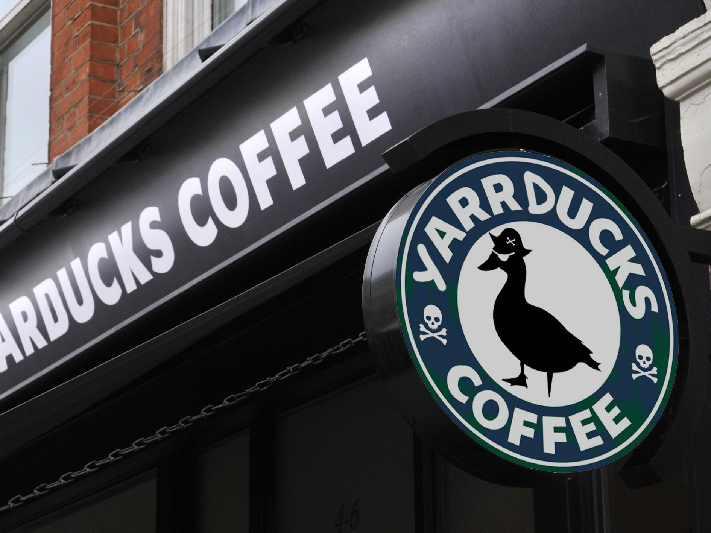

Contact Details
Main Store:
Phone: 0888 7767870
Email: quack@gmail.com
Email: info@quack.co.nz
Location
Main Store:
2nd Pond District
Hamilton Lake
Hamilton
Our Story
Our story began in 2020. Back then we were invaded by a hoard of ducks, and much like how Australia lost to emus... we could not repel them. Any retailer of whole bean and ground coffee, tea and spices surrendered willingly to the ducks as all who opposed them perished. Today, we are privileged to have our lives and still be able to sell our delicious coffee to the world (whilst under new management).YarrDucks is named after the pirate ducks who are now our new overlords.
Our logo is also inspired by the sea – featuring a pirate duck which overthrew us all.
